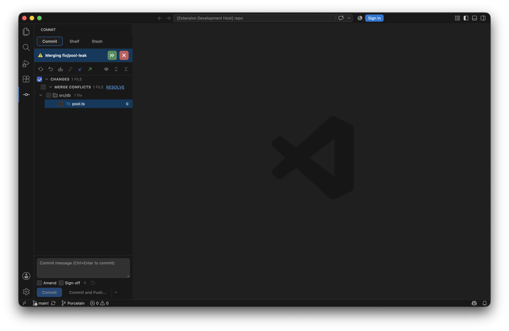
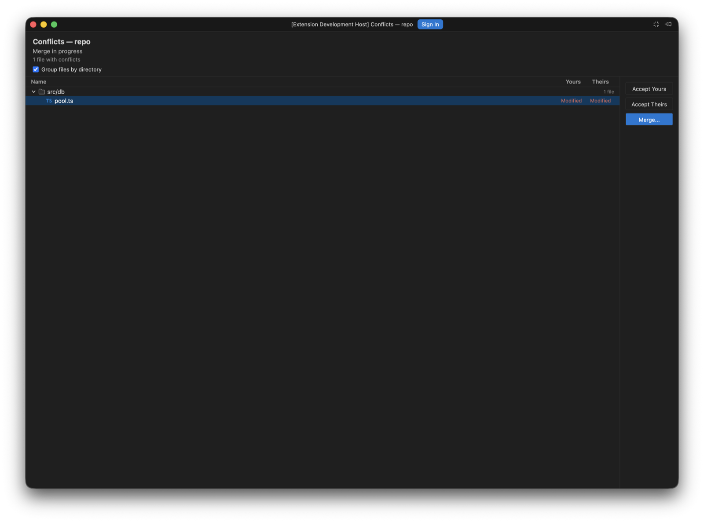

A conflicted merge is three steps, and Porcelain gives each one a surface.
Unmerged files appear as a Merge Conflicts group nested inside Changes, the way IntelliJ shows them, so the same file never appears twice. A banner names the branch being merged and offers to continue or abort.

Resolve opens the conflict list in its own compact window, showing how each side touched every file. Take one side wholesale with Accept Yours or Accept Theirs, or Merge to work through it.

Double-clicking a conflicted file opens the three-way editor in its own window: your side on the left, the working result in the middle, theirs on the right, in IntelliJ's order.
≫ / ≪), ignore, revert to base. Accepting the second side after the first gives you both, IntelliJ-style.Porcelain also registers with VS Code's Source Control view, so a conflicted file there offers Open in Porcelain Merge Editor, and conflicts raised by a terminal merge land in the same places.